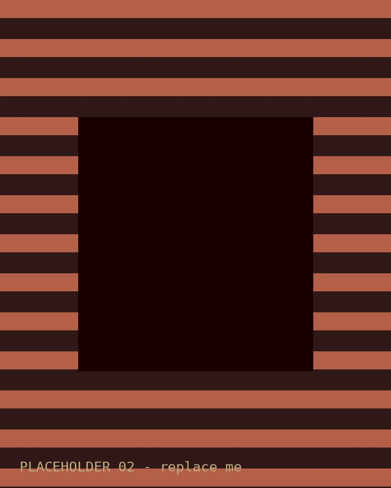
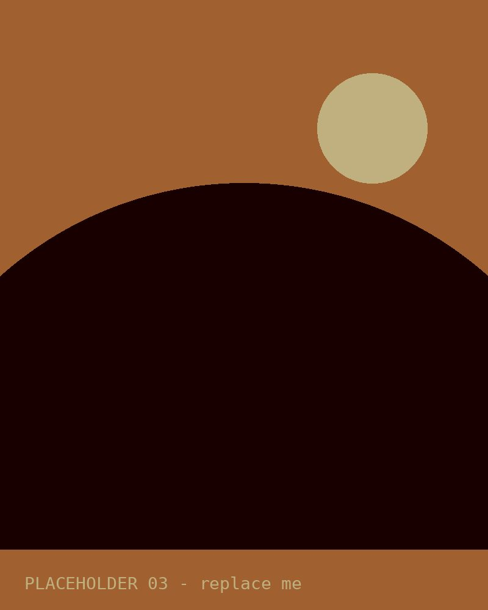
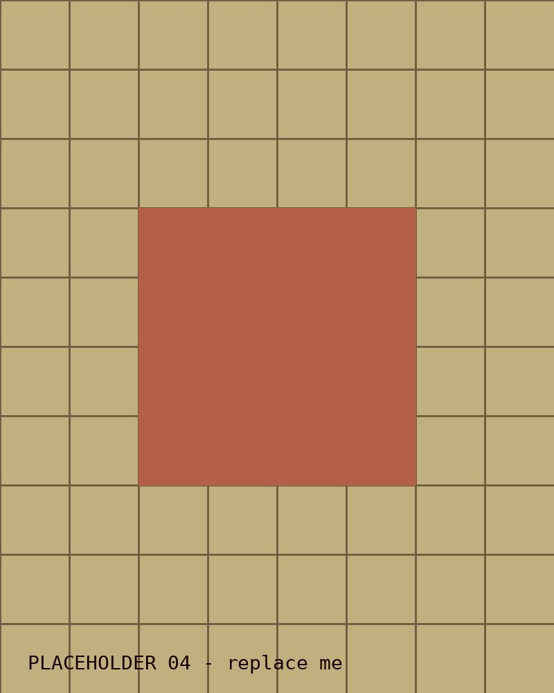

Understand the risk
Before writing a test, I ask what could hurt users or the business most, and where the system is most likely to fail.
Portfolio / 2026
Hi, I'm Joey. Ten years as an engineer across many industries, now focused on test strategy, automation and the pipelines that run them.



(01) Projects
(02) Process
Before writing a test, I ask what could hurt users or the business most, and where the system is most likely to fail.
Unit, API and end-to-end tests at the right layer, written to run on every commit, not once before a release.
Quality gates, security scans and a smoke test stop a bad build before it reaches the registry or the cluster.
Load tests, thresholds and dashboards show how a build behaves under pressure, and feed the next round of tests.
(03) About
I make sure software does what it promises. I started in engineering, moved into quality, and now build the tests, quality gates and pipelines that catch problems before users do.
(04) Skills
(05) Contact
Let's talk